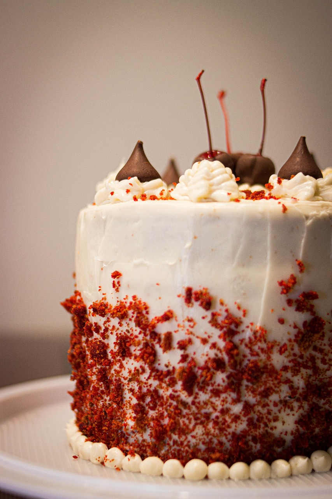
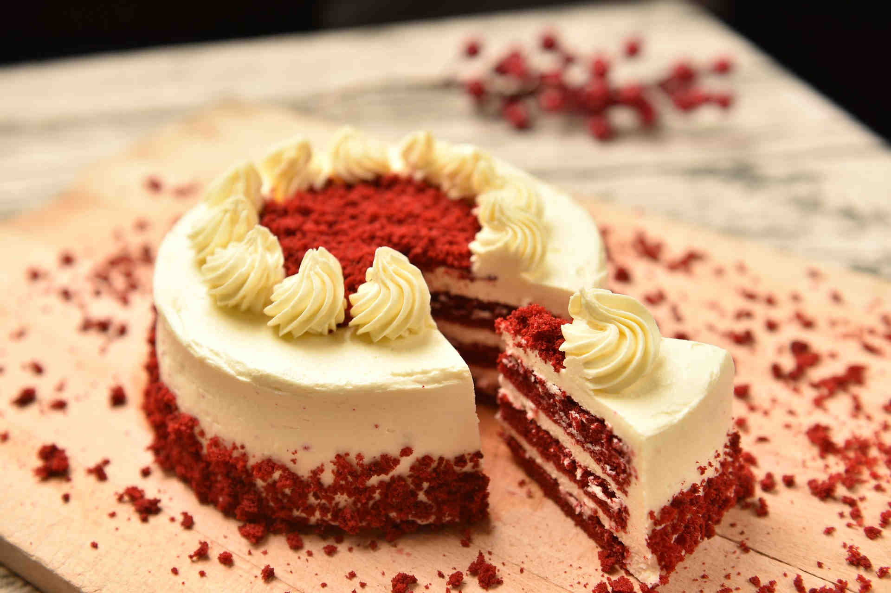
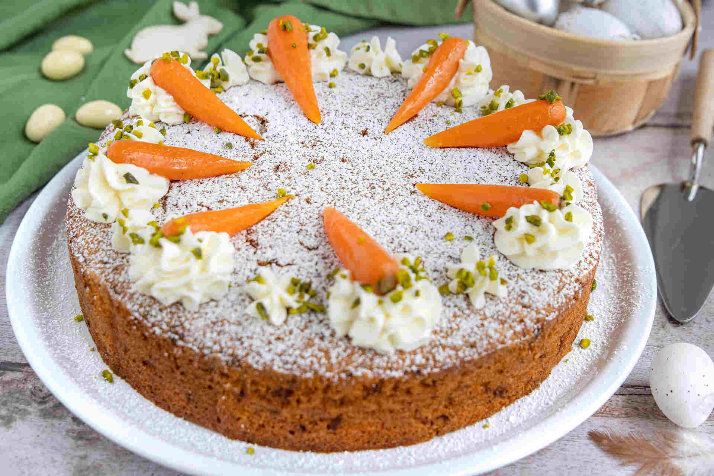
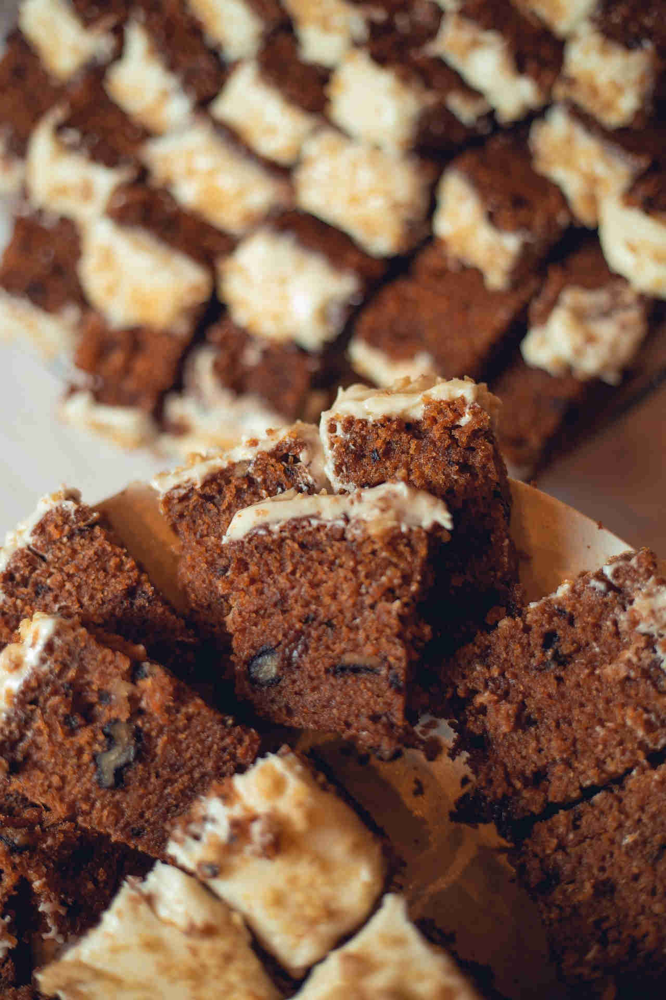
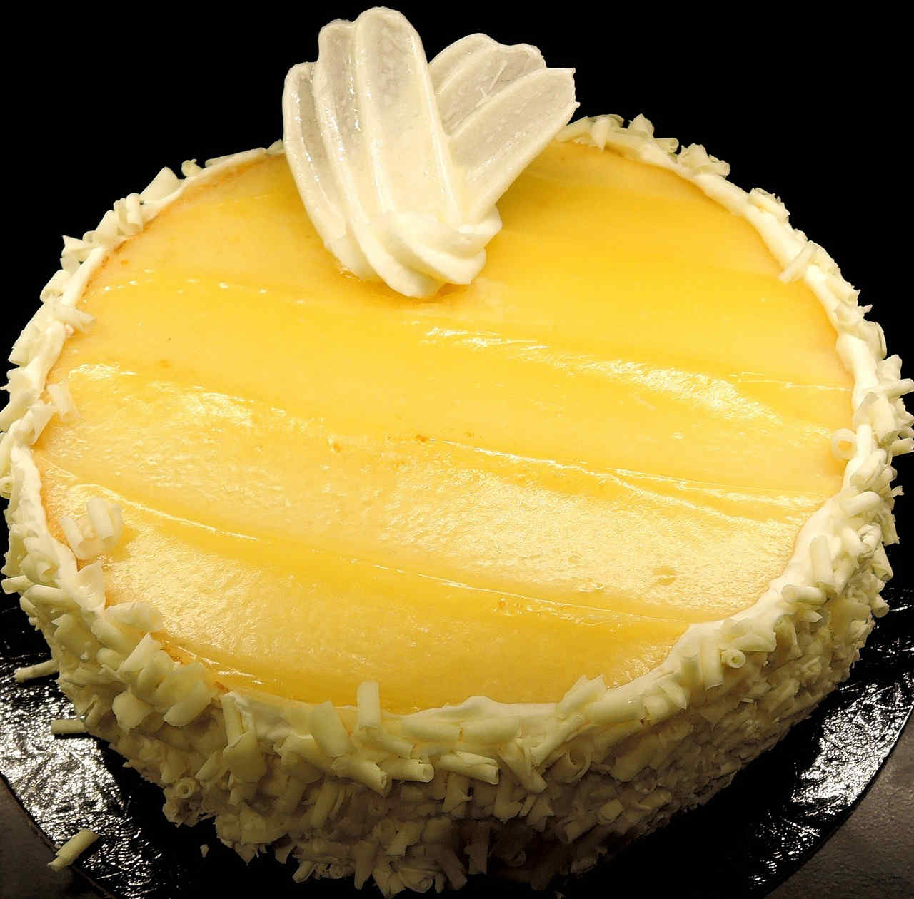

MY FAVORITE CAKES
Red Velvet
{My One And True Red Love}

My love for red velvet runs deep despite the rumors that red velvet is just chocolate cake in disguise. They can never make me hate the red bold color, the warm moist and soft texture, the elegance and magic of it all. Red velvet can easily be made by mixing these ingredients:
- cake flour
- eggs
- oil
- salt
- vanilla extract
- butter
- unsweetened buttermilk
- red food coloring
- cocoa powder
The measurement of these ingredients will depend on the serving size. Once all mixed up and baked, any type of icing will blow the flavors of the cake to the moon as desired.

Carrot Cake
{I Call It A Nearly-Healthy
Cake}

Do I consider carrot cake as a vegetable and do I count it as part of my 5-a day portion of vegetables? Absolutely! Carrot cake is a top 2 because of the carrots, cinnamon, nutmeg, ginger flavors and other healthy add-on options it has such as pecans, walnuts, or raisins. Carrot cake can be made by mixing these ingredients:
- cake flour
- grated carrots
- cinnamon
- eggs
- oil
- salt
- brown sugar
- vanilla extract
- butter
- raisins, or any other add-ons as you wish
The measurement of these ingredients will depend on the serving size. Once all mixed up and baked, any type of icing will deepen the flavors of the cake to the root as desired.

Lemon Cake
{Its A Mere Depiction Of A Soft-Life}

Lemon cake definitely embodies the soft-life
aesthetic. Lemon cake is light, fluffy, moist, tender and full of
tangy zesty flavor. A lemon cake, if ever seen, would walk poised with neck high, in a pretty yellow dress,
on a beautiful summer day. It can be easily made with:
- butter
- oil
- cornstarch
- lemons
- eggs
- buttermilk
- sugar
- salt, and any other ingredients you wish
Once all mixed up and baked, any type of icing will round up all the flavors of the cake as desired.
Prices
| Cake | Serving | Price |
|---|---|---|
| Red Velvet Cake | 0 - 5 ppl | $45.00 |
| 6 - 10 ppl | $65.00 | |
| Carrot Cake | 0 - 5 ppl | $45.00 |
| 6 - 10 ppl | $65.00 | |
| Lemon Cake | 0 - 5 ppl | $45.00 |
| 6 - 10 ppl | $65.00 |